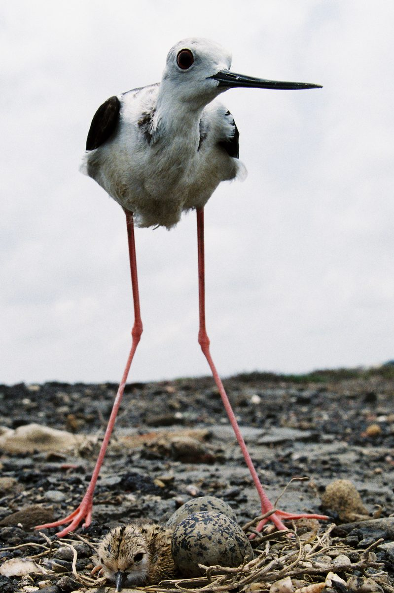

山近月遠覺月小，便道此山大於月───廣角或標準鏡頭。
若人有眼大如天，還見山高月更濶───望遠及超望遠鏡頭。
這首詩，充分告訴我們，物物如也，有廣角和望遠之別，但無需作變形和壓縮之分。
除鏡頭光學和呈像平面上，無可抗拒的變形現象之外，簡直可以說：「廣角不是變形，望遠亦非壓縮。」事實上，由特定透視點出發，看到的畫面，廣角就是如此廣的樣子，望遠也應如是，鏡頭焦距的長短，可以改變視角，但不能改變既定的透視現象。當畫面違背知覺習態，產生了變形和壓縮之感──視覺影像是介乎恒覺與網膜成像之間，所造成的知覺障礙使然。當然，另一方面，正是創作的起點。
透視言，近物大，遠物小。主體愈近鏡頭，背景物相對更為渺小，同為知覺之物，大小之比超乎「正常」之感，被稱為變形。而主體和背景愈接近，相對遠離鏡頭，則物物之間，比例相近，該有的距離感也降低了，被稱為壓縮。若吾人觀物，閉一眼，仔細體會一下路樹或電桿，第一、二株和第八、九株的關係，不正是廣角和望遠之自然區別嗎？若是「自然」的視覺現象，何來變形，也無所謂壓縮才對。而硬要用所謂「標準」鏡頭的刻板觀念去看第一、二和第八、九電桿，當然會變形，會壓縮。其實，鏡頭只是開角大或開角小而已。
攝影動機言，吾人拍攝，先取景，再構圖，觀物之最終立足點，即是鏡頭所在地，畫面的取捨範圍大小，來決定鏡頭的焦距長短。拍攝人像為例：攝影者首先選擇判斷特定對象的最美麗的透視點，若拍特寫，其對角線開角度為12°，則取200mm鏡頭拍攝；若拍半身景，可能適用24°的100mm鏡頭。試問，這兩張照片有「壓縮」之別嗎？沒有。因為任何鏡頭的拍攝點不變，透視現象是一樣的。100mm和200mm間無透視區別，28mm和85mm間也是一樣沒有區別，變形何來之有？故知覺障礙令鏡頭變形或壓縮是也。嚴格說來無所謂望遠或廣角，只有鏡頭間角度的區別。鏡頭視角決定了前後景物大小比例關係，也間接地決定了視覺對各景物的比重地位，是美感工具的前哨。
沒有人能規定拍攝風景，人像或其他攝影題材的鏡頭焦距，長鏡頭或短鏡頭的選擇使用，端看攝影者的美感位置和範圍的抉擇而已。大體言，在畫面中看到的特定光源，其角度愈多，則開角度愈大。若畫面正右方有一光源射向左方，畫面右邊電桿呈逆光感，左方電桿呈順光感，兩者差距愈大，鏡頭焦距愈短。一直立物，下端呈俯視，上端呈仰視，二者視角相差愈懸殊，鏡頭焦距愈短。廣角能在物體和光線方向上，提供更豐富的角度幅度上的變化。同時，同一方向光源，由逆光到順光，建立及作用於物體的性格屬性的廣度也比較寬裕。反之，畫面裏的特定一只光源在相對物體上，方向上的角度變化小或同一物體上下端能觀察的視角愈小，鏡頭焦距則愈長。
若50mm鏡頭拍成的畫面，任取1/4面積，即100mm的範圍。透視現象不變。故任何經過剪裁的畫面，鏡頭尺寸已不是原生定義的廣角或望遠的標準，此五十步百步的關係，豈可用變形和壓縮予以描述！
若50mm鏡頭範圍予以擴大四倍成為對角線92˚角20mm的畫面，透視點相同，視角大小不同，有什麼理由說50mm不變形，20mm就是變形的廣角呢？
攝影為何物？心理與物理方面言，心理可以配合物理完成物理需求；物理也可以配合心理，完成心理慾求。一滴雨珠，可以拍成一條線，也可以拍成一滴，前者心理，後者物理。一大片雨珠，近鏡頭處拍成線狀，遠處拍成點狀，也不是難事。但，吾人無法以一只鏡頭，使一滴雨珠成點，也成線狀。同樣的，鼻耳間距離感和大小比例感，同一只鏡頭，似乎無法在畫面上獲得兩全齊美。正面拍照時，滿足於二者大小比例感覺之鏡頭，必損失二者間之實質距離感，反之亦然。若二者關係在要求上取其近似值，以為滿足的話，則引伸到所有鏡頭，當然可被接受，五十步即百步，百步即五十步，那麼，「變形」和「壓縮」豈非同一件事！
常言：長鏡頭，景深短；短鏡頭，景深長。實用觀點，不可行。因為拍照不可能在一張照片上，用兩種焦距鏡頭拍同一景物（慢速變焦不論）。故，特定焦距鏡頭只用在特定景框內，無從比較焦距與景深的關係。何況，任何焦距鏡頭，不論多長或多短，拍攝同樣範圍畫面時，在同一光圈、同一拍攝主體焦點下，景深是完全一樣的。因此，只有用大小光圈的變化，來調整景深的長短，才是實務。
照片的邊線，是有形框框。對視覺言，是引導，也是範圍和界限，是重要的參考架構。以P.C鏡頭為例：
許多善用P.C鏡頭的人士，都盡可能地將建築物的線條調到與畫面邊線平行。仰角拍攝時，建築物因此不會有向後倒的感覺。
「線條的平行」一定是視知覺的反應需求嗎？我認為不然。一個大小恒常性的實驗結果顯示：在典型實驗結果的曲線是介於理論上的完全恒常性的線條與憑視角配對的理論曲線之間，但接近理論上完全恒常性的線條。然而知覺並非重疊於該線條。這是依大小恒常性畫出來的建築物的圖，應當是上下一般寬的，同時得和畫面邊緣平行才對，不過，實際知覺當非如此，它是下邊寬上邊微微地窄些。建築物愈高，則知覺愈窄。一般鏡頭透視得極窄也不是視知覺所喜歡的現象。在相對比例關係的實驗裏，結果顯示知覺大小通常介於完全和零的大小恒常性之間，比例關係也影響到大小知覺。
基於此，到底建築物的照片如何拍才符合視知覺反應呢？我認為它須用P.C鏡頭拍，但不需調整到軟片與建築物平行的地步，使四四方方的建築物下端寬，上端微微窄些，則看來沒有向後倒的感覺，且有仰角意味。此外，值得嘗試的便是將相紙的上端也微微地剪窄點兒，但不必與建築物平行，懸掛在牆上的仰角同等於鏡頭拍攝時的仰角角度，說不定看到照片上的建築物更接近視覺哩！
近看廣角照片；遠觀望遠照片。是不是可以緩解變形和壓縮的障礙？有待讀者自己省察。
焦距長短，決定某些視覺氣氛。變形與壓縮，只是一種描述。或許以下幾點也許會直接、間接影響對鏡頭焦距的判斷。
立體感佳的鏡頭，視覺認為焦距短些。鏡頭呈像細膩和粗糙，影響鏡頭焦距的錯覺。
光影現象：順光，誤遠為近；逆光，誤近為遠。同一鏡頭，知覺有異。
景深長及場景深遠，易向短焦距方向產生錯覺。
透視線索愈少，焦距長短愈不易分辨。晴空群飛野鳥畫面，難判鏡頭焦距。青藏公路，一望無盡，長短鏡頭，視差「無幾」。
物體放置違反知覺及透視習慣，不易辨別使用鏡頭的焦距長短。例：電桿正常間隔為50m，改為10m時，易誤為長鏡頭所拍。同一性質的物體屬性，近小遠大的被排列，結果顛覆對鏡頭的認知。
變形和壓縮的觀念上，也會因學習、經驗、心向、習慣、文化等等因素，取得均衡和協調。同為特寫畫面的人像攝影，有人喜歡使用85mm鏡頭，也有人喜歡使用100mm鏡頭是也。
若某情境下，難辨28mm和35mm鏡頭透視上的區別，大概500mm及600mm的透視感差別也不容易體會，因此，理解各鏡頭透視上的美感變化，比建立「廣角變形，望遠壓縮」的刻板印象，重要多了。
鏡頭只是開角度大小，壓縮和變形，基本上，是不存於屬性當中的。鏡頭所見之物，是視覺上的「看到」而已，不必作任何心理詮釋，只需在看到的「形相」上作直覺性判斷，即可進入美感經驗。前景、主體、背景三者間的適當配置，誇張地說，可以是「變形」的配置，也可以是「壓縮」的配置，鏡頭表現了配置上的透視效果。若此三者間造形比例關係，作有別於「變形」感和「壓縮」感的處理，則被刻板設計的鏡頭特性，將無地自容。此時此景，美感價值判斷，依然可以締造。鏡頭是寫文章的筆，不是命題式的作文。
鏡頭像毛筆，是沒感情的，書法家能把精神貫到筆尖，寫出好字；攝影者也可以將意念投給鏡頭，拍出好照片。筆太大或太小，控制均不易；鏡頭焦距愈長或愈短，愈遠離視覺習慣。鏡頭（lens）的感情，在於拍攝出有感情的鏡頭（shot），才有意義。變形和壓縮是心理的障礙，當提升為感情的昇華工具──不要用負向名詞，阻擾鏡頭有情化的正向發展。
鏡頭（lens）和鏡頭（shot），中文同字。若無心中鏡頭（shot），怎能有效使用鏡頭（lens），若無能正確認知和使用鏡頭（lens），心中即使用鏡頭（shot），也難創作出作品。視覺的鏡頭（shot），是在演繹或歸納視覺與鏡頭焦距相融合的情境後，發揮個人美感潛力而產生創作行為。是以，好鏡頭（shot）與好鏡頭（lens），在善性的多層交替後，建立創作意識和行為境界，表現出精湛的鏡頭（lens & shot）。──鏡頭（lens）和鏡頭（shot）的合一，根本不必是廣角或望遠鏡頭討論的問題。
兩張照片為例：

以上兩張照片，一為廣角，一為望遠鏡頭所拍，略有剪裁。是廣角變形，還是望遠變形呢？壓縮和變形是形容詞，還是事實描述呢？其實，相差超過三十五倍的兩只鏡頭焦距，如此而已。